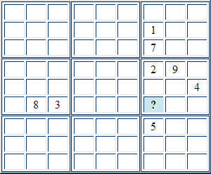

Sudoku Solving Techniques - Naked SingleThis technique is also known as "sole candidate" It is often the case that a cell can only possibly take a single value, when the contents of the other cells in the same row, column and block are considered. This is when, between them, the row, column and block use eight different digits, leaving only a single digit available for the cell. For example, in the partial puzzle below, the marked cell can only be a 6. All other digits are excluded by the other contents of the row, column and block.  Back to Sudoku Solving Techniques
|